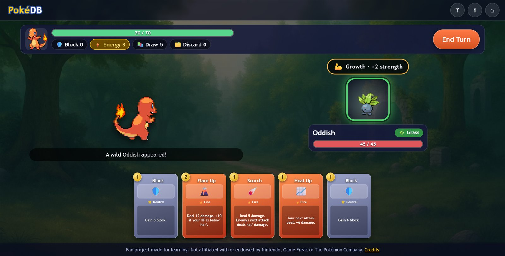

Live
PokéDB: Roguelike Deck Battler
Pick a starter, climb a branching Slay-the-Spire-style map, grow your deck with new moves and relics, and beat three bosses. Every enemy is a real Pokémon with its own move pattern. A free, non-commercial fan project.
- JavaScript
- Game design
- Roguelike